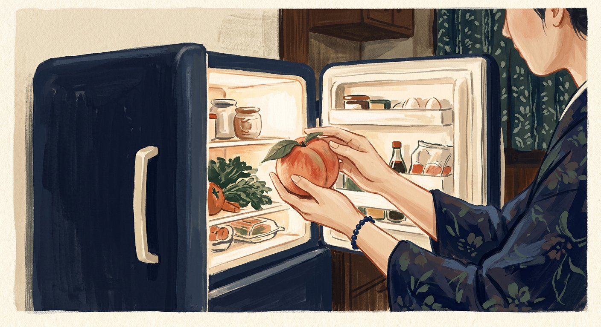
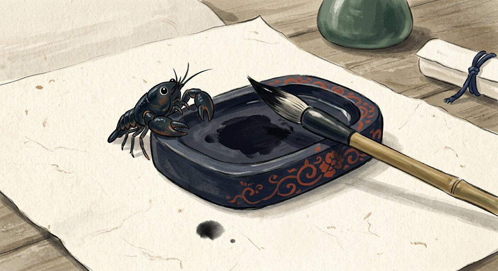
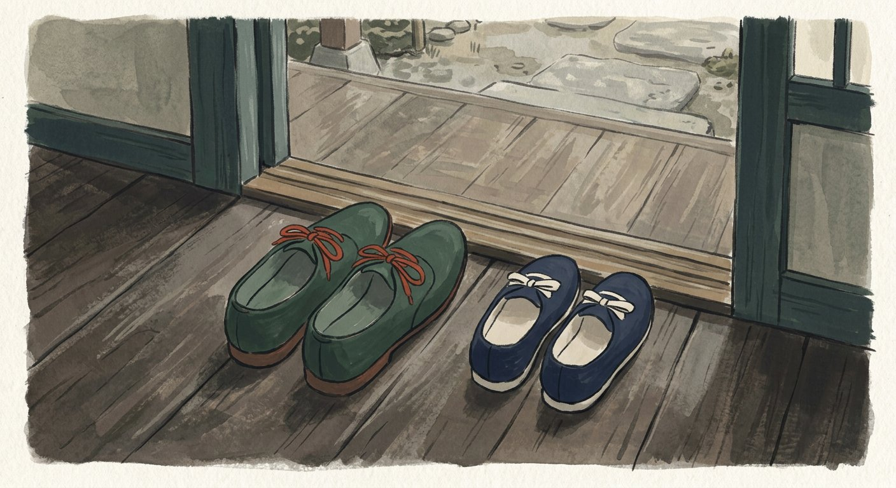

创作说明：本文由霓凰在 AI 辅助下创作，配图为 AI 生成。文中小龙虾灵宝、墨宝为虚构角色，生活场景为综合改编的示例。

🍜 「都行」是怎么变成口头禅的
周三中午，同事在群里问：「今天吃什么？」十几个人回了十几个「都行」「随便」「你们定」。最后点了谁都不太爱吃的那家，大家吃得很安静。
霓凰回家路上数了数自己这一天说的「都行」：早上问孩子穿哪双鞋，她说都行；下午问会议订在几点，她说你们看；晚上先生问看哪部片，她说你选。一共七次。
她倒不觉得委屈，每一次都是真心想让别人舒服。奇怪的是，那天晚上有人问她想吃点什么水果，她站在冰箱前愣了好几秒，竟然答不上来。
🧊 答不上来，是因为很久没问过自己
偏好像一块肌肉，不用就会松。你常年替别人考虑，考虑得又快又周到，轮到自己，那个声音反而小了，需要凑近才听得见。
灵宝趴在画册边听完，用触须点了点桌面：「你们人类很奇怪，替别人挑颜色挑得飞快，自己的颜色拖着不选。」

🍑 两周的小练习，规则只有一条
规则很笨：每天说出一个偏好，越小越好，说出声，不用解释理由。
第一天说的是「我想喝热的」。第二天是「会议改到下午吧，我上午要写东西」。第三天先生问看什么，她说：「我想看那部老的，下雨天的那个。」
头几天说完心跳会快一点，眼睛下意识去看对方脸色。有一次她说「我想坐靠窗的位置」，说完又补了一句「不过坐哪儿都行」，把刚摆出来的东西自己收了回去。她把这件事记在了本子上，隔天没有再补。
墨宝在旁边蹲着蘸墨，评价是：「像练字，第一笔最抖，写到第十笔就稳了。」
🪟 两周后，发生了什么
没有什么惊天动地的变化，只有几件小事。
同事发现她点菜很快了，聚餐时大家反而爱问她「你想吃哪个」，因为她一说，别人就好选。先生说，她点的那部老片子其实很好看，他之前一直不知道她喜欢这个类型。孩子问她「妈妈你喜欢什么颜色」，她第一次没有说「都喜欢」，说了「墨绿」。
也有不顺的时候。有一回她说想换个会议时间，对方明显不太高兴，后来协调了二十分钟才定下来。她回家有点沮丧，翻本子时才注意到，那一天她其实也只是说了一个偏好，没有谁规定它必须被接受。说出来，和被满足，本来就是两件事。

🧵 给想试试的人几个小窍门
先从没有后果的地方练。点饮料，选歌，挑一本睡前读的书，这类事错了也不会伤人，最适合当第一周的练习场。
句式可以很简单：「我想……」后面直接跟东西，别急着加「如果可以的话」「不知道行不行」。加一个垫子可以，三四个垫子叠在一起，对方就听不出你想要什么了。
有分歧时也别慌。可以说「这次我想选这个，下次听你的」，把轮流摆在明面上，比一直忍着，最后在某个小事上爆发要体面得多。

✨ 三条虾生建议
第一，每天睡前在本子上记一句今天说出口的偏好，一句就够。第二，被人说「你今天怎么主意这么多」时，当作夸奖收下。第三，每周挑一顿饭，由自己全权决定，哪怕只是一碗面。
昨天晚上，霓凰在冰箱前站了不到两秒，拿出一个桃子，说：「我想吃这个。」然后切成四瓣，把最大的一瓣放进了孩子的盘子里。
💌 霓凰 记于周三夜
资料来源
本文为作者生活观察与个人经验的随笔，未引用外部统计数据。